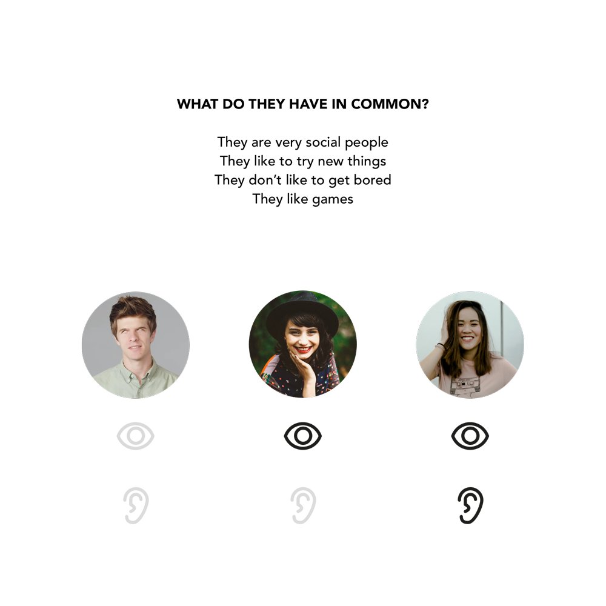
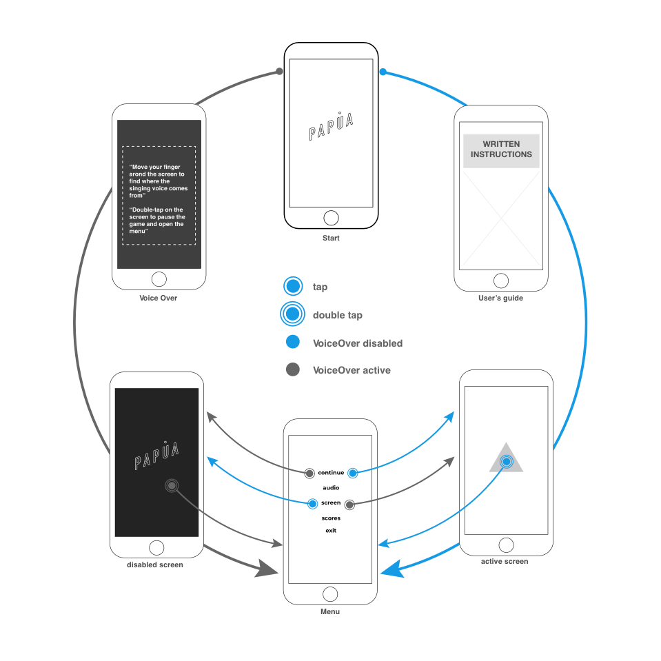

Papua is an accessible game that grants even conditions for everyone, whether they are blind, deaf or neither. The player can be guided by his sight or hearing with the same efficiency: at any time, both image and sound can be activated or disabled and keep playing.
Research
My main goal was to investigate navigation
resources to create an experience where
blind and deaf users would have an equally
pleasing experience as average users.
I contacted with multiple people affected
by different disabilities. My focus was on
blind users, as controlling a phone with
no visual resources was the most challenging
aspect. I learned about their methods of
orientation, the do’s and don’ts of usability,
and most importantly, I got to empathize
with them.

Persona
I had at least 3 personas with diry different needs: A blind user, a deaf user, and a person without visual or hearing impairments. The first two were my main focus, as they required further investigation in terms of navigation, while the third can usually use all navigation systems developed. Nevertheless, I had to keep in mind all three profiles were my users.
MVP
During research I noticed most of the people I
interviewed pointed out there are very few
accessible games. The ones that existed seemed
like ancient wisdom to be shared amongst the community.
I thought a game would be a great environment
to experiment with navigation systems that could
eventually be implemented to other contexts.
As my users pointed out during the interviews,
Iphones were the most accessible smartphones
in the market and the most popular amongst
blind users and therefore, I decided my MVP
would be a game for iOS.

Information architecture
I took into consideration the
different ways people navigate
with their phones and merged
them to create a simple and
universal system. In the image,
you can see the app reacts differently
if the phone has the Voice Over
activated or not, to skip unnecessary
steps in both cases.
Even though the game with the disabled
screen mode was not meant specifically
to people without visual difficulties,
I wanted to invite them as a part of the gaming experience.
That’s why the option to disable audio and screen is always available.
UI&Music
I needed the app to create a bond with my user.
And I needed it to be the same if the user didn’t
see anything, so I couldn’t rely on looks only.
I decided to create a very simple interface,
where color was the main element, as I wanted
to create moods rather than images, to be able
to translate the visuals into music and sounds to
connect to users with visual impairments.
Prototype
Here you can access the first prototype of Papua. Don’t be harsh to it, we are currently developing the whole game, as the audio and accessibility features are not available yet. Have Fun!